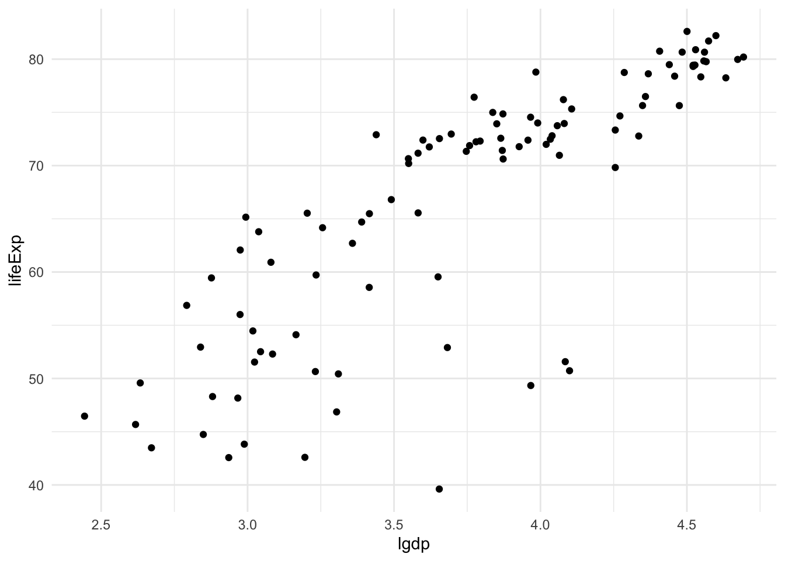
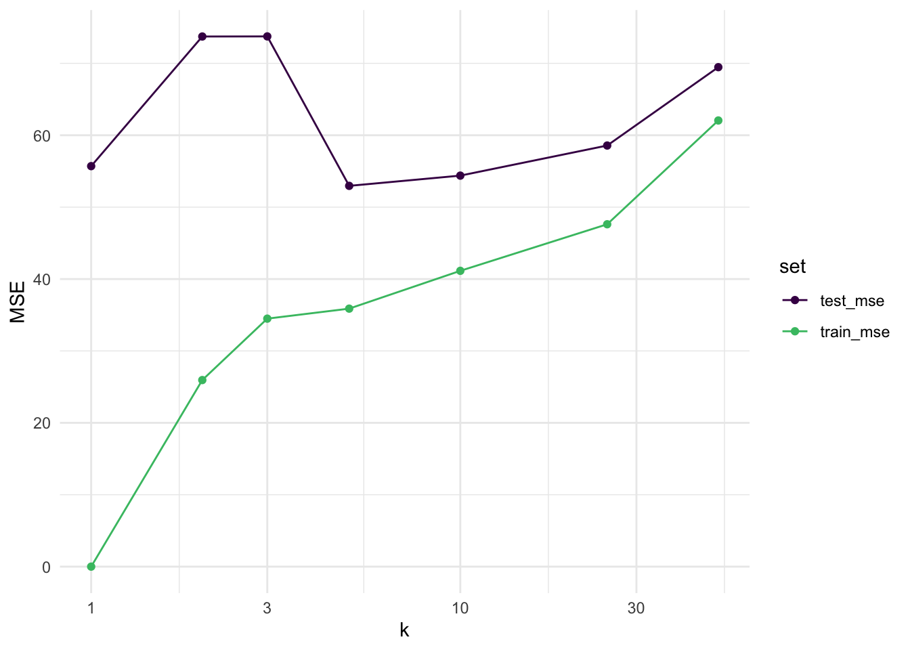

library(tidyverse) # should've already install.packages("tidyverse")
library(gapminder) # might need to install.packages("gapminder")
library(broom) # might need to install.packages("broom")
theme_set(theme_minimal())Week 1 seminar (complete)
Before you start
Without looking anything up: for the gapminder data, write down the four parts of a prediction competition (the unit, the inputs and outcome, the score, how the held-out set is chosen). Then, for each input: would you have it at the moment you need the prediction, for a country whose life expectancy you don’t know? “All of them” is an acceptable answer if you can say why.
TipReveal answer
Unit: a country in one year (2007). Inputs: gdpPercap, pop, continent (year is constant, so it carries nothing). Outcome: lifeExp. Score: mean squared error on the held-out countries (a choice; the classification week asks who made it). Held-out set: a random subset of countries, chosen once, never used for fitting. All of the inputs are available in principle, and a justified “all of them” is a full answer; the sharper point is that lifeExp is built from the same national statistics as pop, so “we don’t know life expectancy but we know population exactly” is a fiction to keep in mind. The purpose is to make students check each input against the moment of prediction, not to find a trap.
Problems
These four problems rebuild the pieces of the lecture’s bias–variance decomposition. They use nothing beyond first-year probability.
Problem 1. Let \(Z\) be a random variable with mean \(\mu\) and variance \(\sigma^2\).
Show that \(\mathbb E[Z^2] = \sigma^2 + \mu^2\).
In the lecture’s model \(Y_0 = f^\star(x_0) + \varepsilon_0\), the noise has mean \(0\) and variance \(\sigma^2\). What is \(\mathbb E[\varepsilon_0^2]\)?
Now let \(Z = f^\star(x_0) - \hat f(x_0)\), where \(f^\star(x_0)\) is a fixed number and \(\hat f(x_0)\) is a random predictor with mean \(m\) and variance \(v\). Write \(\mathbb E[Z^2]\) in terms of \(f^\star(x_0)\), \(m\) and \(v\). Which piece is a bias, and which a variance?
TipReveal answer
\(\mathrm{Var}(Z) = \mathbb E[(Z - \mu)^2] = \mathbb E[Z^2] - 2\mu\,\mathbb E[Z] + \mu^2 = \mathbb E[Z^2] - \mu^2\), so \(\mathbb E[Z^2] = \sigma^2 + \mu^2\).
\(\mathbb E[\varepsilon_0^2] = \sigma^2 + 0^2 = \sigma^2\). This is the noise term: it is there whatever the predictor does.
\(Z\) has mean \(f^\star(x_0) - m\) and variance \(v\) (subtracting a random variable from a constant keeps the variance), so \(\mathbb E[Z^2] = [f^\star(x_0) - m]^2 + v\). The first piece is the squared bias, the second the variance of the predictor. This is line 3 of the board derivation: “add and subtract \(\mathbb E \hat f(x_0)\)” is exactly part (a) applied to \(Z\).
Common error: writing \(\mathbb E[Z^2] = (\mathbb E Z)^2\). Minimal hint for (a): “expand \((Z - \mu)^2\)”.
Problem 2. Let \(Y_1, \ldots, Y_k\) be independent random variables, each with variance \(\sigma^2\), and let \(\bar Y = \frac1k \sum_{l=1}^k Y_l\).
What is \(\mathrm{Var}(\bar Y)\)? Say where independence is used.
Suppose instead that \(Y_1 = Y_2 = \cdots = Y_k\) (the same random variable repeated). What is \(\mathrm{Var}(\bar Y)\) now? What does this say about averaging things that are not really different?
TipReveal answer
\(\mathrm{Var}(\bar Y) = \frac{1}{k^2}\sum_l \mathrm{Var}(Y_l) = \frac{1}{k^2} \cdot k\sigma^2 = \sigma^2/k\). Independence (uncorrelatedness is enough) is what lets the variance of the sum be the sum of the variances: the cross terms \(\mathrm{Cov}(Y_l, Y_{l'})\) vanish. This is the variance term of the bias–variance decomposition: the \(k\) neighbors’ noises are independent, so averaging them divides the variance by \(k\).
\(\bar Y = Y_1\), so \(\mathrm{Var}(\bar Y) = \sigma^2\): no reduction at all. Averaging only helps to the extent that the things averaged carry independent noise. (The tree-methods week returns to the in-between case, positively correlated terms, where the variance of an average is \(\rho\sigma^2 + (1 - \rho)\sigma^2/k\); do not derive it now.)
Common error: \(\mathrm{Var}(\bar Y) = \sigma^2/k\) in (b) too, by applying the formula without its assumption.
Problem 3. In the lecture’s setting, the new outcome’s noise \(\varepsilon_0\) has mean \(0\) and is independent of the training data. Let \(g\) be any function of the training data (for example, \(g = f^\star(x_0) - \hat f_k(x_0)\)).
Show that \(\mathbb E[\varepsilon_0\, g] = 0\).
Give an example where \(\mathbb E[\varepsilon_0] = 0\) but \(\mathbb E[\varepsilon_0\, g] \neq 0\). (Think about what happens if the “new” point is one of the training points.)
TipReveal answer
Independence gives \(\mathbb E[\varepsilon_0\, g] = \mathbb E[\varepsilon_0]\,\mathbb E[g] = 0 \cdot \mathbb E[g] = 0\). (Mean zero plus zero correlation would also suffice, since \(\mathbb E[\varepsilon_0 g] = \mathrm{Cov}(\varepsilon_0, g) + \mathbb E[\varepsilon_0]\mathbb E[g]\); independence is the assumption in force.) This is line 2 of the board derivation: the cross term dies.
Take \(g = \varepsilon_0\) itself: \(\mathbb E[\varepsilon_0 \cdot \varepsilon_0] = \sigma^2 \neq 0\). That is what happens when the point you evaluate on is a training point: \(\hat f_k(x_0)\) then contains \(\varepsilon_0\), the cross term does not vanish, and the error at that point is smaller than the bias–variance decomposition says. With \(k = 1\) it is exactly zero. So training error is not the quantity in the bias–variance decomposition. Leave it there; the validation week does the rest.
Minimal hint for (a): “what does independence let you do to an expectation of a product?”
Problem 4. Five training points, one input each:
| \(x\) | 1 | 2 | 4 | 7 | 8 |
|---|---|---|---|---|---|
| \(y\) | 3 | 5 | 4 | 10 | 9 |
Compute the \(k\)-nearest-neighbor prediction at \(x_0 = 3.5\) for \(k = 1\), \(k = 3\) and \(k = 5\).
What is the \(k = 1\) prediction at \(x_0 = 4\)? At \(x_0 = 7\)? What is the training error of the \(1\)-NN predictor on these five points?
What is the \(k = 5\) predictor, as a function of \(x_0\)?
TipReveal answer
Distances from \(3.5\): \(2.5, 1.5, 0.5, 3.5, 4.5\). Nearest first: \(x = 4, 2, 1, 7, 8\). So \(k=1\): \(4\); \(k=3\): \((4 + 5 + 3)/3 = 4\); \(k=5\): \((3+5+4+10+9)/5 = 6.2\).
At a training point the nearest neighbor is itself, so the prediction is its own outcome: \(4\) at \(x_0 = 4\), \(10\) at \(x_0 = 7\). Every residual is zero, so the training error is \(0\), for any data set with distinct inputs, whatever \(y\) is.
The mean of all five outcomes, \(6.2\), for every \(x_0\): the \(k = n\) predictor is the baseline competitor from the lecture’s leaderboard. So \(k\) runs from “copy the nearest point” to “ignore the input”; the competition is about where in between to stop.
Common error in (a): forgetting to sort the distances before taking the first \(k\).
Coding
1. The competition
After running library(gapminder) you can access the dataset. Try typing View(gapminder) in the Console.
Take the countries observed in 2007. Split them at random into 100 countries you may use for fitting and 42 whose life expectancy is hidden from you. (You have it, of course. Don’t look at it until the end of each part; that is the rule of the competition.)
gm <- gapminder |>
filter(year == 2007) |>
mutate(lgdp = log10(gdpPercap))
test_id <- sample(nrow(gm), 42)
train <- gm[-test_id, ]
test <- gm[test_id, ]Your split is different from your neighbor’s. Keep that in mind all the way through.
Create a scatterplot of the training data
lgdp on the horizontal axis, lifeExp on the vertical axis (hint: geom_point).
# gm_scatterplot <- ggplot(train, aes(x = ____, y = ____)) + geom_point()
# gm_scatterplot
...
TipReveal solution
gm_scatterplot <- ggplot(train, aes(x = lgdp, y = lifeExp)) +
geom_point()
gm_scatterplot
The baseline competitor
The simplest competitor predicts the same number for every country: the training mean of lifeExp. Compute its mean squared error on the test set.
baseline <- mean(train$lifeExp)
# mse_baseline <- mean((____ - ____)^2)
...
TipReveal solution
baseline <- mean(train$lifeExp)
mse_baseline <- mean((test$lifeExp - baseline)^2)
mse_baseline[1] 152.3432A second competitor: a straight line
Fit model_lm <- lm(lifeExp ~ lgdp, data = train). Get its predictions on the test countries with predict(model_lm, newdata = ____), then compute the test MSE.
model_lm <- lm(lifeExp ~ lgdp, data = train)
# mse_lm <- mean((____ - predict(model_lm, newdata = ____))^2)
...
TipReveal solution
model_lm <- lm(lifeExp ~ lgdp, data = train)
mse_lm <- mean((test$lifeExp - predict(model_lm, newdata = test))^2)
mse_lm[1] 56.71782Question 1. How much better than the baseline is the line? Is “better” here a statement about these 42 countries or about all countries?
TipReveal answer
Typically the line’s test MSE is about a third of the baseline’s (across random splits the baseline is usually 115–190 and the line 35–75). It is a statement about these 42 countries: the test MSE is an average of 42 losses, and another 42 would give a different average. Part 3 measures how different.
2. Nearest neighbors, by hand
You may use abs, order, mean and a for loop, but not a library that does nearest neighbors for you. The point is to see the mechanism: a prediction is an average of the outcomes of the nearest training points (problem 4, in code).
Step 1. Write a function that takes one new input x0, the training inputs x and outcomes y, and a number of neighbors k, and returns the average outcome of the k training points nearest to x0. The distances are computed for you; you write the two lines that pick the neighbors and average their outcomes.
knn_predict <- function(x0, x, y, k) {
distances <- abs(x - x0)
...
}Hint (open after your first attempt)
order(distances) gives the positions of the distances from smallest to largest, so its first k entries are the positions of the k nearest points.
TipReveal solution
knn_predict <- function(x0, x, y, k) {
distances <- abs(x - x0)
nearest <- order(distances)[1:k]
mean(y[nearest])
}Check it on problem 4’s data first: knn_predict(3.5, c(1, 2, 4, 7, 8), c(3, 5, 4, 10, 9), k = 3) should give the number you computed by hand.
knn_predict(3.5, c(1, 2, 4, 7, 8), c(3, 5, 4, 10, 9), k = 3)[1] 4Now on one country. For x0 = 4 (GDP per capita of 10,000 dollars) and k = 5, which five training countries are used, and what is the prediction?
# nearest5 <- order(abs(train$lgdp - 4))[1:5]
# train[nearest5, c("country", "gdpPercap", "lifeExp")]
# knn_predict(4, ____, ____, k = 5)
...
TipReveal solution
nearest5 <- order(abs(train$lgdp - 4))[1:5]
train[nearest5, c("country", "gdpPercap", "lifeExp")]# A tibble: 5 × 3
country gdpPercap lifeExp
<fct> <dbl> <dbl>
1 Serbia 9787. 74.0
2 Costa Rica 9645. 78.8
3 Lebanon 10461. 72.0
4 South Africa 9270. 49.3
5 Montenegro 9254. 74.5knn_predict(4, train$lgdp, train$lifeExp, k = 5)[1] 69.7318Checkpoint (run it; if it stops, fix step 1 before going on):
stopifnot(length(knn_predict(4, train$lgdp, train$lifeExp, k = 5)) == 1,
knn_predict(4, train$lgdp, train$lifeExp, k = 1) %in% train$lifeExp)Step 2. Predict for all 42 test countries with k = 5: the loop is set up for you; fill in the one line that makes the prediction for test country j, then compute the test MSE.
pred <- numeric(nrow(test))
for (j in seq_len(nrow(test))) {
# pred[j] <- ____
...
}
# mse_knn5 <- mean((____ - ____)^2)
...
TipReveal solution
pred <- numeric(nrow(test))
for (j in seq_len(nrow(test))) {
pred[j] <- knn_predict(test$lgdp[j], train$lgdp, train$lifeExp, k = 5)
}
mse_knn5 <- mean((test$lifeExp - pred)^2)
mse_knn5[1] 52.96093Checkpoint:
stopifnot(length(pred) == nrow(test), all(is.finite(pred)), mse_knn5 > 0)Step 3. Wrap step 2 in a function knn_mse(k, newdata) that returns the MSE of the k-nearest-neighbor predictor on any data frame with columns lgdp and lifeExp; the skeleton is given, you write the prediction line and the MSE line. Then compute the training MSE and the test MSE for k = 1, 2, 3, 5, 10, 25, 50.
Question 2. Before you run it: what do you expect the training MSE at k = 1 to be, and why? Write your prediction down first.
TipReveal answer
Exactly zero: every training point is its own nearest neighbor (with distinct inputs). Problems 3(b) and 4(b) are the same point. It tells you nothing about the competition score; do not lecture it, the full treatment is the validation week.
knn_mse <- function(k, newdata) {
pred <- numeric(nrow(newdata))
for (j in seq_len(nrow(newdata))) {
# pred[j] <- ____
...
}
# mean((____ - ____)^2)
...
}
ks <- c(1, 2, 3, 5, 10, 25, 50)
results <- tibble(
k = ks,
train_mse = sapply(ks, knn_mse, newdata = train),
test_mse = sapply(ks, knn_mse, newdata = test)
)
results
TipReveal solution
knn_mse <- function(k, newdata) {
pred <- numeric(nrow(newdata))
for (j in seq_len(nrow(newdata))) {
pred[j] <- knn_predict(newdata$lgdp[j], train$lgdp, train$lifeExp, k = k)
}
mean((newdata$lifeExp - pred)^2)
}
ks <- c(1, 2, 3, 5, 10, 25, 50)
results <- tibble(
k = ks,
train_mse = sapply(ks, knn_mse, newdata = train),
test_mse = sapply(ks, knn_mse, newdata = test)
)
results# A tibble: 7 × 3
k train_mse test_mse
<dbl> <dbl> <dbl>
1 1 0 55.7
2 2 25.9 73.7
3 3 34.5 73.7
4 5 35.9 53.0
5 10 41.1 54.4
6 25 47.6 58.6
7 50 62.1 69.5results |>
pivot_longer(-k, names_to = "set", values_to = "MSE") |>
ggplot(aes(k, MSE, colour = set)) +
geom_line() +
geom_point() +
scale_x_log10() +
scale_colour_viridis_d(end = 0.7)
Checkpoint:
stopifnot(nrow(results) == 7, results$train_mse[1] == 0 || any(duplicated(train$lgdp)))Question 3. Which k would you submit, and what did you use to decide? You are about to report the same held-out score you chose on: is there a problem with that?
TipReveal answer
The k with the smallest test MSE. Which one that is depends on the split: across random splits the winner is 5, 10 or 25 about four times in five, occasionally 3, and k = 1 wins on fewer than one split in a hundred. Two things are wrong. The differences among the middle ks are smaller than the standard error computed in part 3, so the fine ranking is mostly noise. And the held-out set was used to choose k, so its score for the chosen k is no longer an untouched evaluation. Do not resolve this here: the protocol is the validation week, the reuse problem the regularization week. If a student raises it: “yes, write that question down”.
3. The score is a random variable
Your test MSE is an average of 42 losses. From the split you already have, compute the 42 individual squared errors of the k = 5 predictor, their mean (the test MSE again) and the standard error of that mean, \(\text{sd(losses)}/\sqrt{42}\). (This standard error treats the 42 losses as independent draws; that is an assumption about the countries, not a fact about them.)
# losses <- ____
# c(mean = mean(losses), se = ____)
...
TipReveal solution
losses <- (test$lifeExp - pred)^2
c(mean = mean(losses), se = sd(losses) / sqrt(length(losses))) mean se
52.96093 10.42531 Question 4. Compare your test MSE and its standard error with your neighbor’s. Are the two test MSEs within a standard error of each other? What made them different?
TipReveal answer
Usually yes, sometimes no: the standard errors on these data are typically 10–25, and the two scores differ because the two splits differ, in both which 42 countries are held out and which 100 were fitted on. The standard error treats the fitted predictor as fixed and measures only the first kind of variability, the sampling variability of an average of 42 losses; the difference between two students’ scores also carries the second. The organizer has one held-out set and one submission per competitor, so can compute only a standard error for each competitor’s own score. Whether a gap between two competitors is real is a further question, about the difference of their losses on the same units, which we leave open this week.
4. Predicting on new data
Models are supposed to capture structure in the data that corresponds to structure in the real world, and if the real world isn’t misbehaving, that structure should be somewhat stable. Suppose the relationship changed dramatically from one time period to another: then a model fit on one period would be less useful, because it might fit poorly on data from another.
Create the 1997 data, then get predictions for every 1997 country from the straight line (fitted on 2007 training countries) with the newdata argument, and compute the MSE.
gm1997 <- gapminder |> filter(year == 1997) |> mutate(lgdp = log10(gdpPercap))
# mse_lm_1997 <- mean((gm1997$lifeExp - predict(model_lm, newdata = ____))^2)
...
TipReveal solution
gm1997 <- gapminder |> filter(year == 1997) |> mutate(lgdp = log10(gdpPercap))
mse_lm_1997 <- mean((gm1997$lifeExp - predict(model_lm, newdata = gm1997))^2)
mse_lm_1997[1] 34.02651Question 5. Is it surprising how well the model does on 1997? The 1997 rows are the same 142 countries, ten years earlier. Has the model predicted anything new? What question does this test answer, and what question did the held-out split in part 1 answer?
TipReveal answer
Country-level GDP and life expectancy move slowly, so the 1997 rows are nearly the training rows again (100 of them literally the training countries); a low error mostly shows that the same countries barely moved. It does not show the model predicts new countries; the assumption it violates is independence of the test units from the training units. The held-out split in part 1 answers “can we predict a country we have not seen?”; the 1997 test answers a different, also legitimate, question: is the relationship stable over time? Both questions matter; the point is to know which one you asked. This is the lecture’s closing question 2, and next week’s opener.
Before you leave
Compare your table from part 2 with your neighbor’s. Did the same k win? Write one sentence on what that means for a leaderboard, and one on what the organizer should report next to each score.
TipReveal answer
Different splits, often a different winner among the middle ks: a leaderboard ranking is a statement about one held-out set, and a gap smaller than a standard error is not established. The organizer should report a standard error with every score; how two competitors scored on the same units should be compared is left open this week. Collect a few sentences; week 2’s opener uses them.